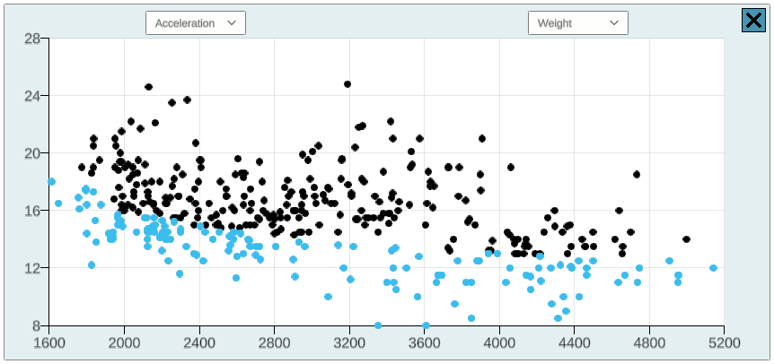

Namespace IVLab.Plotting
Classes
BrushSelectionMode
A brush-like SelectionMode that asks the current DataPlot it is working on to select any data points that have been brushed over since it was last updated.
ClickSelectionMode
A click-based SelectionMode that asks the current DataPlot it is working on to select the nearest data point that lies within the click position.
Cluster
A collection of (consecutive) data point indices that should be treated as related.
ClusterDataTable
Special type of DataTable where each row has an additional identifier to indicate which "cluster" that data point is a part of.
ClusterPlot
An implementation of ScatterPlot that allows data points to be clustered together so that related data can be selected all at once.
ClusterPlot.ClusterPlotCluster
A Cluster implementation that adds some additional attributes specific to the necessities of the ClusterPlot.
DataManager
Manages data, primarily by way of loading the DataTable used by the DataPlotManager, and by maintaining a reference to the LinkedIndices related to that data, from which
DataManagerManager
Abstract class providing template for the management of data managers.
DataPlot
An abstract class that declares (and defines) variables and methods that are ubiquitous to all data plot implementations, such as plotting, updating, resizing and selection functionalities.
DataPlot.PlotLayout
Contains all the information necessary to format and layout a data plot.
DataPlotManager
Manages the visualization and control of multiple DataPlot objects simultaneously.
DataTable
Column-major order data table that can be initialized from a basic CSV, another data table, or with
random data.

DefaultMaskingToggle
LayerApplier
Ensures layers are properly applied throughout the scene on awake.
LinkedData
Provides definitions for any script that wants to be able to update data in sync with the index space.
LinkedIndices
This class provides an "index space" wherein each index is allowed to have additional attributes/data attached to it, such as whether or not that index (and the data that correlates to it) is highlighted or masked.
LinkedIndices.LinkedAttributes
This class acts as a container for the attributes attached to each individual index, as used by LinkedIndices.
ManagerContainer
Container class used to make the linkage between Data Managers and
Data Plot Managers more strict in the inspector. Used by
MaskingToggle
Provides framework for implementation of a method to mask/unmask unselected on a button press.
MultiDataManagerManager
Manages multiple data managers, allowing for multiple data tables to be used in the same visualization, each with it's own linked index space and set of data plots.
NiceAxisLabel
Creates "nice" axis labels by taking the min and max values that the axis needs to display and altering them to create an even tick spacing.
ParallelCoordsPlot
Parallel coordinates plot DataPlot implementation that uses Unity particle systems
along with line renderers to efficiently render many data points at once.

PlottingUtilities
A collection of utilities intended to improve the usability of the 2DPlotting package.
PlottingUtilities.Consts
Global access to constants used in the 2D plotting package.
PlotUISkin
RectPadding
Describes padding around a rectangular object.
RectSelectionMode
A rectangular SelectionMode that generates a selection rectangle and asks the current DataPlot it is working on to select any data points that lie within it.
ScatterPlot
Scatter plot DataPlot implementation that uses Unity's particle system to efficiently render many data points at once. 
SelectionMode
Abstract class which declares variables and methods ubiquitous to all possible selection modes.
SingleDataManagerManager
Manages single data manager and data plat manager as opposed to MultiDataManagerManager. Used to create a simpler plotting setup in editor.
SplitViewController
Basic control over the 2D/3D split camera view.
Structs
NiceAxisLabel.AxisLabelInfo
Stores all the information needed to generate axis labels.
Interfaces
ILinkedData
Interface for any class that contains data points which need to be updated based on the current linked index space.
Enums
SelectionMode.State
Selection states.